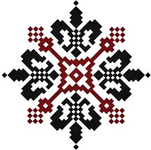

Натуральні тканини
Ми шиємо тільки із повністю натуральних та якісних тканин. Вишиванки легко носяться та приємні до тіла.
2КОЛЬОРИ
У нашому ательє ви маєте унікальну можливість підібрати та створити вишиванку на ваш смак своїми руками.
Унікальний подарунок
Українська вишиванки — є практичним, незабутнім та оригінальним подарунок, що прослужить довго і яскраво!
В останні роки речі з українською символікою і колоритом знаходяться на вершині
популярності у всій Україні і не тільки! Кожна культура і народ має власний традиційний одяг, однак, тільки
українські сорочки можуть нести в собі глибокий сакральний і в той же час патріотичний зміст. Світові дизайнери
регулярно постачають свої колекції нарядами з традиційних етнічних фасонів, доповнені мотивами і кольорами
різноманітних орнаментів і вишивок. Незважаючи на величезну різноманітність подібних убрань, вся світова громадськість
визнає культуру української вишиванки. Ще в давні часи сорочки виготовляли з бавовни, льону або конопель. Вишитий одяг
обов'язково прикрашали за допомогою національних орнаментів та візерунків.